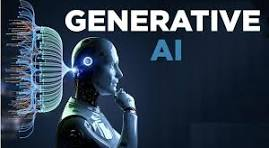

Generative AI
Generative AI refers to a class of artificial intelligence models capable of creating new content, such as text, images, music, or code, by learning patterns from existing data. Unlike traditional AI systems that focus on analysis or prediction, generative AI models—like GPT for text or DALL·E for images—generate original outputs that mimic human creativity. This technology is transforming industries by enabling rapid content creation, personalized experiences, and innovative problem-solving, while also raising important questions about ethics, originality, and responsible use.
The applications of generative AI are vast and transformative. In creative industries, it assists in generating original artwork, composing music, and drafting written content, thereby enhancing productivity and creativity. In business, it streamlines processes by automating tasks such as customer support through AI chatbots and generating marketing materials. Moreover, in fields like healthcare and finance, generative AI aids in drug discovery and financial forecasting by analyzing complex datasets and generating predictive models . While the technology offers significant benefits, it also raises ethical considerations, including concerns about misinformation, job displacement, and the need for responsible usage.
.jpg)